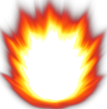
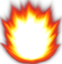

|
|
Part 1: Animation and keyboard
Spaceship controls:
- W key: move ship forward
- S key: move ship backwards
- D key: rotate ship to the right
- A key: rotate ship to the left
- Space key: Shoot a bullet from the spaceship
Restrictions:
- Gun needs to reload for two seconds before it can fire again.
- When an asteroid is destroyed a new one takes its place in a random location.
Extras:
- View the angles and origin of the spaceship, bullet and asteroids by clicking on the "Debug Mode" button below the canvas.
- The spaceship and asteroids have a 2d topology, meaning that when they exit the viewable area from the left, right, up or down direction, they will reappear in the opposite side.
- Change the number of asteroids that appear on screnn by change the its input box
- Modify the Gun's reload delay
Puppet
|
 
